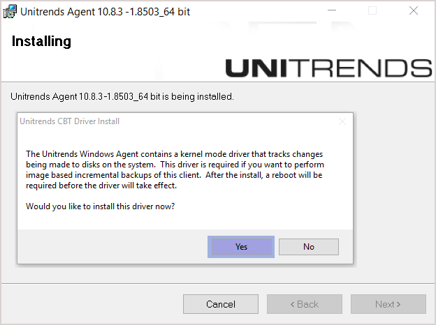
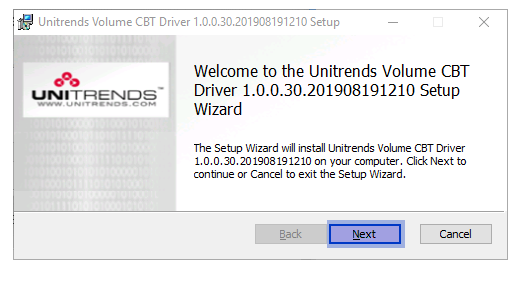
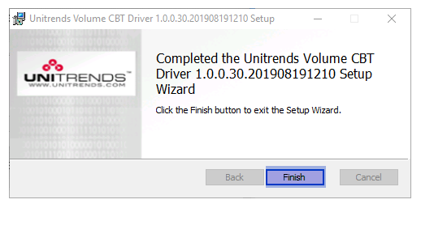

Volume CBT Driver 설치 및 제거¶
1. 설치 단계¶
(1) 드라이버 설치 파일 실행
드라이버 설치 파일을 더블클릭하여 실행합니다.
Volume CBT Driver 설치 파일 위치:
C:\PCBP\installer\uvcbt.msi 
② Volume CBT 드라이버 설치 상태
최신 드라이버가 이미 설치된 경우: 드라이버 설치 창이 표시되지 않으며, 기존 드라이버가 사용됩니다.
이전 드라이버가 설치된 경우: 새 버전을 설치하거나, 기존 버전을 유지할 옵션이 제공됩니다. ③ 드라이버 활성화
드라이버 설치 후에는 Windows 시스템을 재부팅하여 드라이버를 활성화해야 합니다.
Windows 시스템 재부팅은 최초 한번만 진행되며, 에이전트 설치 직후에 진행하지 않아도 됩니다.
Volume CBT 드라이버는 Windows 시스템이 재부팅해야 활성화됩니다. 